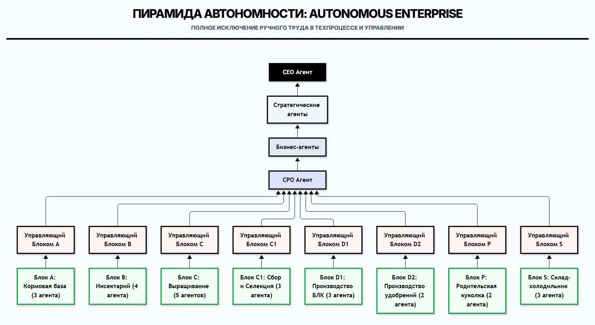
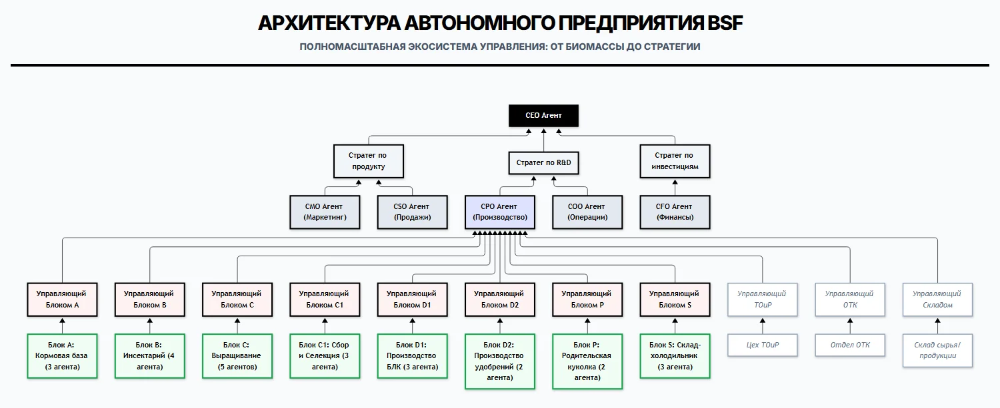

Активный модуль выращивания
По функциям это аналог клеточного яруса птичника, а не лотка.
Модуль, в отличие от лотка, создаёт контролируемую, максимально комфортную среду обитания для личинки. Внутри него личинка получает то, чего лоток дать не может.
Оценка проекта; проверяется на прототипе.
Роботизация всей фермы
ИИ-агенты там, где АСУ не справляется
Общая схема роботизации производственного комплекса уже есть. Она показывает: роботизировать можно всю ферму, а не отдельные операции.
Схема роботизации комплекса

От блоков техпроцесса к управляющим агентам, затем к CPO и верхним уровням. Каждый участок фермы получает своего агента и передаёт данные наверх.
ИИ-агенты в контуре управления

В таком виде — с ИИ-агентами — можно роботизировать всю ферму. Но полная роботизация только на ИИ-агентах не рациональна.
Где ИИ нужен, а где нет
Пример: техническое зрение в выращивании
В систему управления вводится техническое зрение. Появляется дополнительный параметр контроля — характер движения личинок.
Проанализировать такие изменения в характере движения без использования ИИ очень сложно. Ещё сложнее выдать системе жизнеобеспечения модуля сигнал управления, который устраняет дискомфорт для личинки.
Схема
Нажмите Esc, чтобы закрыть.